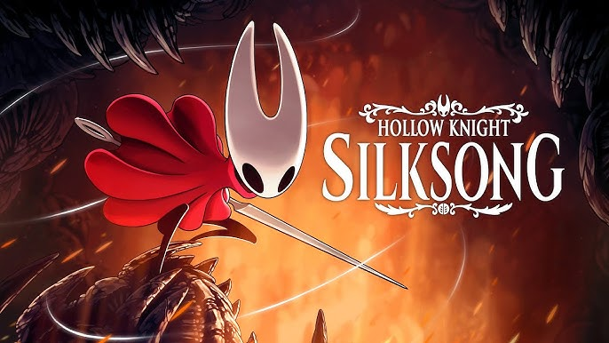

INICIO
En los últimos años, los juegos indie han cobrado una relevancia notable dentro de la industria de los videojuegos. A diferencia de las grandes producciones respaldadas por estudios multimillonarios, los juegos independientes suelen ser desarrollados por equipos pequeños e incluso por una sola persona con presupuestos limitados, pero con una gran dosis de creatividad, innovación y libertad artística. Esta independencia les permite explorar mecánicas de juego originales, narrativas profundas y estilos visuales únicos que a menudo no se ven en los títulos comerciales más populares. Gracias a plataformas digitales como Steam, itch.io y consolas con soporte indie, estos juegos han logrado llegar a una audiencia global, demostrando que no se necesita un gran presupuesto para crear experiencias memorables. Los juegos indie no solo han redefinido lo que puede ser un videojuego, sino que también han abierto camino a nuevas voces dentro del medio.
Acerca de Nosotros
Este espacio está dedicado a celebrar el mundo de los videojuegos independientes. Nos enfocamos en destacar aquellas obras que, sin el respaldo de grandes estudios, logran sorprender por su originalidad, profundidad narrativa y propuestas innovadoras. Creemos que los juegos indie representan una forma de expresión artística única dentro de la industria del entretenimiento digital. Aquí encontrarás reseñas, entrevistas, noticias y análisis centrados en el talento creativo detrás de estos proyectos que, muchas veces, nacen de la pasión y el deseo de contar historias diferentes.
Hollow Knight: Silksong
Hollow Knight: Silksong es la esperada secuela del exitoso juego indie Hollow Knight (2017), desarrollado por Team Cherry. En esta nueva entrega, el jugador toma el control de Hornet, la protectora principesa, quien tras ser capturada es transportada al reino de Pharloom, un lugar desconocido plagado de misterios, enemigos corrompidos por una locura silken (“Haunting”) y antiguas reliquias de una civilización olvidada. Con una mejora en la movilidad, nuevas habilidades mágicas basadas en “Silk” (hilo/seda), una narrativa más ambiciosa, y un mundo visualmente impresionante, Silksong expande la fórmula del metroidvania clásico del primero, ofreciendo tanto para los fanáticos como para quienes descubren el universo por primera vez. El lanzamiento global se produjo el 4 de septiembre de 2025 en múltiples plataformas, generando una gran expectación y una respuesta masiva por parte de la comunidad gamer.
| Nombre del juego | Hollow Knight: Silksong |
|---|---|
| Desarrollador | Team Cherry |
| Género | Metroidvania, Acción / Aventura |
| Fecha de lanzamiento | 4 de septiembre de 2025 |
| Plataformas | Windows, macOS, Linux, Nintendo Switch, Nintendo Switch 2, PlayStation 4, PlayStation 5, Xbox One, Xbox Series X |
| Modo de juego | Un jugador |
| Compositor | Christopher Larkin |
| Precio de salida | US$ 19.99 (Varía según la ubicación) |
- Hornet como protagonista: la jugabilidad se centra en este personaje, distinto al Knight del primer juego, con una movilidad más ágil y habilidades específicas.
- Sistema de “Silk” (seda): al atacar enemigos o interactuar con ciertos objetos, Hornet acumula “Silk”, que sirve para curarse o para usar habilidades especiales (“Silk Skills”) desbloqueadas conforme avanza el juego.
- Herramientas, Crests y habilidades ajustables: Hornet podrá equipar diferentes herramientas, elegir habilidades de “Silk” y ajustar crests desde puntos seguros (bancos), lo que permite personalizar el estilo de juego.
- Mundo nuevo – Pharloom: escenarios variados como grietas musgosas (Moss Grotto), ciudades doradas, tierras húmedas y mohosas, etc., con más de 150 enemigos nuevos y decenas de jefes legendarios.
- Desafío y exploración: con mecánicas de metroidvania clásicas (áreas que se desbloquean con nuevas habilidades, secretos, rutas ocultas) sumadas a nuevas habilidades de movimiento como escalada, uso de corrientes de aire, lanzar aguja (“needle throw”) que facilitan la exploración vertical.
- Gran recepción inicial: al lanzamiento el juego tuvo millones de jugadores en sus primeras horas/días, buena aceptación general (aunque algunas críticas por localización) y problemas técnicos de tráfico en tiendas digitales por la enorme demanda.
Contactos
Said Altamirano
Tel: 0999885632
saaltmirano2@espe.edu.ec
Mariano Perez
Tel: 0971125698
perezperas@espe.edu.ec